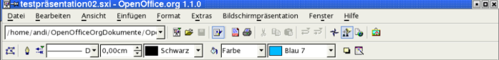
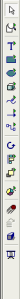
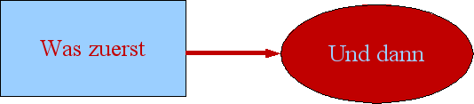
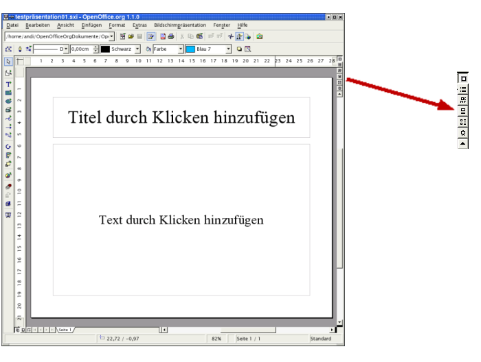

| [zurück] | [Hauptmenü] | [weiter] |
| [PDF] | ||
Einführung in die Arbeitsumgebung
Unter der Titelleiste (blaue Farbe in der unten stehenden Abbildung) befindet sich die:
Menüleiste.
Darunter befinden sich zwei Symbolleisten, die:
Funktionsleiste und
Objektleiste.

Abbildung 1: Symbolleisten
Die Menüleiste enthält die Hauptbefehle der Präsentation.
Im Menü Datei befinden sich insbesondere die Befehle zum Öffnen, Erstellen (Neu), Speichern, Exportieren und Drucken von Dateien sowie zum Beenden von OpenOffice.org.
Das Menü Bearbeiten enthält Befehle zur Behandlung einer Datei wie zum Beispiel Rückgängig, Ausschneiden, Kopieren, Alles Auswählen, Suchen und Ersetzen, zum Aufruf des Navigators und zum Duplizieren.
Unter dem Menü Ansicht können Sie zum Beispiel den Maßstab der Darstellung Ihrer Präsentation ändern. Sie können dort die verschiedenen Symbolleisten, Lineale und Statusleiste ein- und ausblenden, die Arbeitsansicht wechseln und die Anzeigequalität ändern. Hier schalten Sie auch das Vorschaufenster ein.
Mit dem Menü Einfügen fügen Sie unter anderem eine neue Seite(n), Feldbefehl(e), Tabelle(n), Grafik(en) usw. in Ihre Präsentation ein.
Das Menü Format bietet Ihnen Möglichkeiten, die einzelnen Objekte auf Ihrer Präsentation anders zu gestalten. Sie können beipielsweise den Stil von verwendeten Linie(n) ändern (durchgehend, unterbrochen usw.), die Ausrichtung von Texte(n) bestimmen (diagonal, senkrecht etc.), die Bemaßung (Abstände) festlegen und den Schriftfont, die Schriftgröße etc. (Zeichen) vorbestimmen. Außerdem können Sie hier auch das Seitenlayout ändern und die Seitenvorlage (Vorlage - Seitenvorlage) auswählen.
In dem Menü Extras können Sie die Rechtschreibprüfung (Rechtschreibung - Prüfen) sowie die Silbentrennung aufrufen. Hier finden Sie auch die Gallery mit den verfügbaren OpenOffice.org-Grafiken und unter Makro sehen Sie die vorhandenen StarBasic-Makros (Dort befindet sich ab Version 1.1 auch der Zugriff auf den Makrorecorder.). In diesem Menü können Sie auch das Anpassen Ihrer Arbeitsumgebung starten und die verschiedenen Grundeinstellungen (Optionen) von OpenOffice.org Ihren Wünschen entsprechend ändern (z. B. Standardfonts oder Benutzerdaten).
Das Menü Bildschirmpräsentation bietet Ihnen Dialoge, die mit der Durchführung der Präsentation zu tun haben. Hier können Sie die Bildschirmpräsentation (mit oder ohne Zeitnahme) starten. Hier lässt sich einstellen, wie die Bildschirmpräsentation ablaufen soll (z. B. ab welcher Seite gestartet werden soll, welche Form der Mauszeiger haben soll) (Bildschirmpräsentationseinstellungen). Auch lassen sich hier Effekte zuweisen und das Verhalten von OpenOffice.org Impress bei einem Mausklick (Interaktion) steuern.
Im Menü Fenster können Sie zwischen den offenen Dokumenten navigieren sowie ein neues Fenster öffnen.
Das Menü Hilfe enthält den Zugriff auf die verschiedenen Formen von Hilfsfunktionen.
Öffnen Sie die einzelnen Menüs und probieren Sie die einzelnen Befehle einmal aus. Sie können die Änderungen regelmäßig mit dem Rückgängigbefehl im Menü Bearbeiten wieder zurücksetzen.
Die Funktionsleiste gibt Ihnen den Zugriff auf allgemeine Programmfunktionen wie „Datei bearbeiten“, „Neu(e)“ Präsentation, „Datei öffnen“, „Dokument speichern“, „Direktes Exportieren als PDF“ (ab Version 1.1), „Drucken“, „Ausschneiden“, „Kopieren“ und „Einfügen“. Hier finden Sie auch die Rückgängig(-Machen)-Pfeile, mit denen Sie bis zu 20 Aktionen zurücksetzen können (in zwei Richtungen: sowohl rückwärts als auch vorwärts).
|
|
Dabei können Sie sogar gezielt einzelne Aktionen aus der Historie auswählen, brauchen also nicht chronologisch rückwärts (oder vorwärts) rückgängig machen. Das Menü zur Auswahl eines Schrittes öffnet sich, wenn Sie die linke Maustaste länger auf dem entsprechenden Rückgängig(-Machen)-Pfeil gedrückt halten. |
In der Funktionsleiste finden Sie auch den „Navigator“, den „Stylisten“ und die „Gallery“.
Die Objektleiste fasst einige Werkzeuge zusammen, die in der jeweiligen Situation für die Präsentation wichtig sind. Sie ändert im jeweiligen Kontext ihren Inhalt. Probieren Sie dies einfach einmal aus, indem Sie in das Feld „Titel durch Klicken hinzufügen“ den Mauszeiger setzen. Es werden Ihnen nun die für die Gestaltung von Text erforderlichen Formationsschaltflächen (z. B. „Fett“, „Kursiv“, „Schriftfarbe“, „Blocksatz“, „Aufzählungsliste ein/aus“) angezeigt.
 Am linken Rand des Bearbeitungsfensters finden Sie die:
Werkzeugleiste.
Sie enthält nützliche Hilfsmittel, um schnell einzelne Gestaltungsmittel in Ihre Präsentation einzufügen. Beispielsweise befindet sich dort eine Schaltfläche, um ein Textfeld zu verwenden. Nach Platzieren des Textfeldes auf der Präsentationsfläche (Aufziehen eines Rechtecks) können Sie mit der Tastatur den gewünschten Text eingeben.
Darunter befinden sich einige Schaltflächen
für grafische Elemente. Um sich mit den vorhandenen Elementen
vertraut zu machen, halten Sie die linke Maustaste
auf einem Element kurze Zeit gedrückt. Es öffnet sich bei
einigen (die mit dem kleinen grünen Dreieck) ein Untermenü,
aus dem Sie weitere Formen auswählen können.
Wenn Sie
den Mauszeiger längere Zeit über einer Schaltfläche
stehen lassen, erhalten Sie eine kurze Erklärung zu deren
Funktion (so genannter Tooltip).
Am unteren Ende der Werkzeugleiste finden Sie Schaltflächen für „Effekt(e)“ und zum Start der „Bildschirmpräsentation“.
Nehmen Sie sich jetzt ein wenig Zeit und testen Sie anhand des folgenden Beispiels die einzelnen Funktionen der Werkzeugleiste. Sie können die Änderungen regelmäßig wieder mit den Rückgängig-Pfeilen in der Funktionsleiste zurücksetzen, sofern Ihnen etwas nicht gefällt.
|
Kleines
Beispiel zum Ausprobieren von Werkzeugleiste |
|
Klicken Sie in das untere Textfeld Ihrer Präsentation.
Wählen
Sie aus der Werkzeugleiste ein Rechteck aus. In der Werkzeugleiste klicken Sie auf die Linien-und-Pfeile-Schaltfläche. Setzen Sie den Mauszeiger anschließend auf die Mitte der rechten Seite des Rechtecks und drücken Sie die linke Maustaste und halten sie gedrückt. Danach gehen Sie auf die linke Seite der Ellipse und lassen die Maustaste wieder los. Der Pfeil ist fertig gestellt. Gehen Sie nun in die Objektleiste und wählen dort eine rote Linienfarbe und eine größere Stärke aus (linke Seite der Objektleiste). Bitte beachten Sie, dass die Einstellungen der Objektleiste sich immer auf das markierte Objekt beziehen. Sie können ein Objekt markieren, indem Sie mit der linken Maustaste darauf klicken. Die Markierung ist an den farbigen Quadraten, die das Objekt umgeben, sichtbar. Durch Klicken auf und Ziehen an ein(em) bereits markiertes Objekt können Sie dieses verschieben. Durch Klicken auf die und Ziehen an den farbigen „Griffen“ können Sie die Größe des Objekts verändern. Nach einem Rechtsklick auf ein Objekt öffnet sich das Kontextmenü, in dem Sie Zugriff auf vielfältige Objekteigenschaften haben.
Wählen Sie das Rechteck und
geben Sie nun den Text Was Zuerst ein.
Setzen
Sie als nächstes den Mauszeiger in die Ellipse und geben Sie
den Text ein: Und
dann. Nun können Sie mit den Rückgängig-Pfeilen experimentieren und einzelne Schritte rückgängig machen bzw. wieder hinzufügen.

Löschen Sie zum Abschluss alle Eingaben aus diesem Beispiel zur Erläuterung der Funktionsweise der Rückgängigschaltflächen.
|

Abbildung
2: Leiste der Arbeitsansichten
An der rechten oberen Seite des Bearbeitungsfensters befindet sich die Leiste für die Arbeitsansichten. Von oben nach unten haben die einzelnen Schaltflächen folgende Bedeutung:
Zeichnungsansicht,
Gliederungsansicht,
Diaansicht,
Notizansicht,
Handzettelansicht,
Bildschirmpräsentation starten.
Rufen Sie jede dieser Arbeitsansichten einmal auf. Auf die letzte Ansichtsvariante können Sie z. Zt. noch verzichten, da Ihre Bildschirmpräsentation bisher nur aus einer leeren Titelseite besteht.